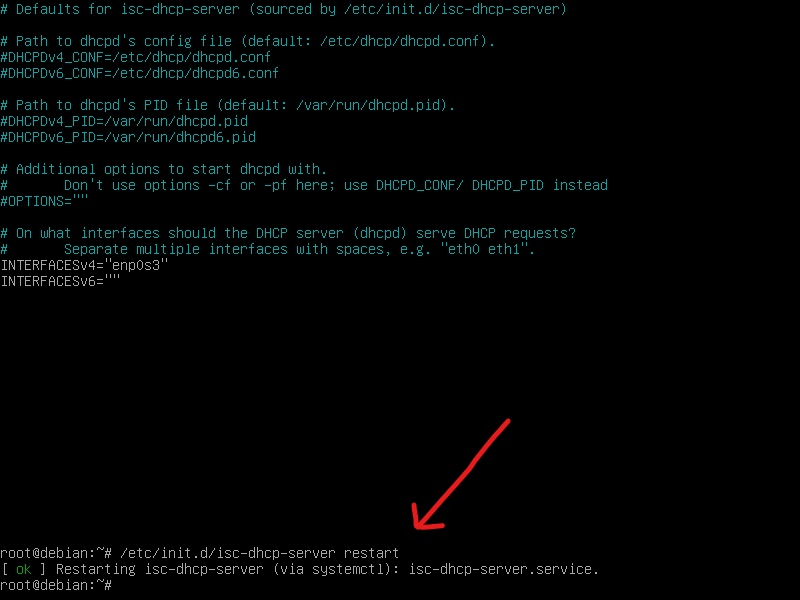

VPN adalah suatu koneksi antara satu jaringan dengan jaringan lainnya secara pribadi (private) melalui jaringan publik (internet).
DHCP Server merupakan solusi yang tepat digunakan pada jaringan komputer, dengan menggunakan DHCP Server Anda tidak perlu lagi mensetting IP Address satu per satu pada PC Client hal ini mempermudah kita sebagai Admin Jaringan komputer.
- Virtual: hal yang tidak nyata atau semu, di dunia maya/ internet
- Private: hal yang sifatnya pribadi, tidak bisa diakses sembarang orang. Untuk menjaga kerahasiannya dari jaringan publik maka semua data akan di-enkripsi
- Network: jaringan koneksi yang saling terhubung
Jadi, dari penjelasan di atas dapat disimpulkan bahwa pengertian VPN adalah hubungan atau koneksi yang terjadi secara virtual pada jaringan tertentu tanpa adanya koneksi riil yang terenkripsi.
Cara Installasi dan konfigurasinya cukup mudah. Akan saya berikan sebuah tutorial installasi dan konfigurasinya dan saya di sini menggunakan software VirtualBox. Oke, Langsung saja ke tutorialnya.
Langkah-Langkah Konfigurasi VPN Server PPTPD Pada Debian Server
1. Langkah pertama, Install debian lalu ubah Adapter 1 jadi NAT dan Adapter 2 jadi Internal Network


2. Intall Iso Windows pada Virtual Box lalu Ubah Adapter 1 Internal Network

3. Masuk debian dengan akun root kemudian ping 8.8.8.8 untuk cek ke internet terhubung tidak

4. Tambah interface enp0s8 dan IP dengan cara
Ketikkan Perintah : nano /etc/network/interfaces
auto enp0s8
iface enp0s8 inet static
address 192.168.1.1/24
auto enp0s8
iface enp0s8 inet static
address 192.168.1.1/24


5. Restart dengan mengetikkan perintah /sbin/shutdown -r now

6. Masuk akun root lagi dan ketik ip a untuk memastikan interface jika dapat ip dan enp0s8 muncul

7. Lalu Ketikkan nano /etc/apt/sources.list

8. Masukkan repository nya dengan ketik
deb http://kartolo.sby.datautama.net.id/debian/ buster main contrib non-free
deb http://kartolo.sby.datautama.net.id/debian/ buster-updates main contrib non-free
deb http://kartolo.sby.datautama.net.id/debian-security/ buster/updates main contrib non-free
Save Tekan Ctrl + X lalu y dan Enter

9. Update debian dengan mengetik perintah apt-get update

10. Jika sudah, keluar konfigurasi dan restart DHCP-nya dengan perintah “/etc/init.d/isc-dhcp-server restart”. Jika ada tulisan OK berarti konfigurasi nya berhasil, tapi jika FAILED coba cek lagi pada konfigurasi IP atau konfigurasi DHCP nya. Untuk merestart DHCP Server bisa juga dengan perintah "systemctl restart isc-dhcp-server.service".
11. Masukkan perintah nano /etc/sysctl.conf

12. Lalu Hapus tanda pagar (#) pada net.ipv4.ip_forward=1 seperti gambar dibawah ini

13. Selanjutnya kita Install PPTPD nya dengan mengetikkan perintah apt-get install pptpd lalu y

14. Masukkan LOCAL IP dan REMOTE IP dengan perintah nano /etc/pptpd.conf

15. Dan Hilangkan tanda pagar (#) pada localip dan remoteip kemudian ubah menjadi
localip 10.10.10.1
remoteip 10.10.10.2-10
Save Tekan Ctrl + X lalu y dan Enter

16. Masukkan ms dan dns dengan perintah nano /etc/ppp/pptpd-options
Oke Demikian kira-kira tutorial Cara Install DHCP Server di Debian 10 ini. Semoga bermafaat untuk kita semua. Silahkan Share Jika kalian merasa postingan ini bermanfaat. Sekian & Terimakasih Salam.

17. Kemudian tambahkan tanda pagar (#) pada
refuse-pap
refuse-chap
refuse-mschap
Hilangkan pagar pada ms-dns dan ubah menjadi
ms-dns 8.8.8.8
ms-dns 8.8.4.4
Save Tekan Ctrl + X lalu y dan Enter
Jika kurang jelas, Lihat pada Gambar dibawah ini!


18. Kemudian Buat user dan password dengan ketik perintah nano /etc/ppp/chap-secrets

19. Masukkan client, server, secret dan IP addresses
Kemudian pada IP addresses ketikkan tanda bintang (*)
Save Tekan Ctrl + X lalu y dan Enter

20. Ketik perintah /etc/init.d/pptpd restart untuk merestart PPTPD
21. Selanjutnya cek pptpd dengan mengetik service pptpd status

22. Masuk ke Windows 10 Virtual tadi lalu ubah ip nya menjadi 192.168.1.2

23. Kemudian buka ke cmd lalu ping kan ke 192.168.1.1 , pastikan windows sudah terhubung ke debiannya

24. Lalu Tambah VPN, caranya masuk ke Settings ➜ Network & Internet ➜ VPN dan klik Add a VPN connection
25. Pilih DropDown pada VPN Provider sebagai Windows (built-in)
Isi Connection Name (Bebas) sebagai contoh vpn alfar
Isi Server name or address masukkan ip debian enp0s8 yaitu 192.168.1.1
Scroll lagi ke bawah

Pada VPN type kita pilih Point to Point Tunneling Protocol (PPTP)
Pada Type of sign-in info pilih Username and password
Pada Username dan Password masukkan Username yang sudah kita buat tadi

26. Jika sudah selesai maka akan jadi seperti ini
Lalu Klik Connect pada vpn alfar tersebut untuk menghubungkan dengan vpn nya

27. Buka cmd lalu ping ke 8.8.8.8 untuk mengecek terhubung internet tidak

Bisa dilihat pada gambar diatas, client belum terhubung ke internet jadi kita Masuk lagi ke Debian dan ketik perintah :
iptables -I INPUT -p tcp –dport 1723 -m state –state NEW -j ACCEPT
iptables -I INPUT -p gre -j ACCEPT
iptables -t nat -I POSTROUTING -o enp0s3 -j MASQUERADE
iptables -I FORWARD -p tcp –tcp-flags SYN,RST SYN -s 10.10.10.0/24 -j TCPMSS –clamp-mss-to-pmtu
28. Dan yang terahir Cek status pptpd nya dengan mengetikkan perintah service pptpd status

Jika sudah aktif lakukan cek internet lagi pada cilent nya dengan kembali Hubungkan windows ke vpn lalu buka cmd dan ping ke 8.8.8.8, kemudian ketikkan tracert 8.8.8.8 untuk mengetahui sumber internet

Selesai sudah cara membuat SERVER VPN PPTPD PADA DEBIAN 10
Jika dirasa kurang jelas bisa pakai cara yang kedua
SAMPAI JUMPA DI POSTINGAN SELANJUTNYA TEMAN TEMAN